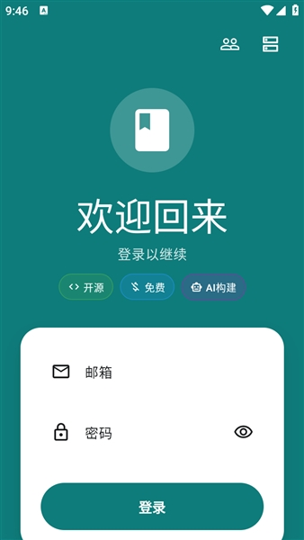
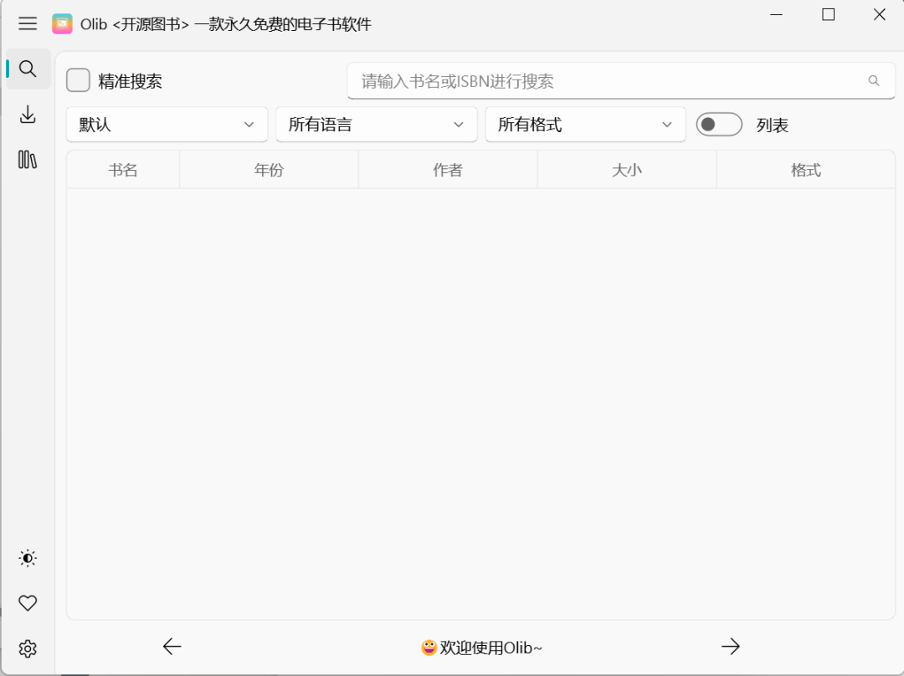

Olib 为什么非要让我登录？——一款电子书客户端的架构取舍
从 Z-Library API 对接、云端同步机制到绿色版分发，拆解 Olib 背后那些用户看不见但每天都在感知的技术选择。
第一次打开 Olib，弹窗先要 Z-Library 账号密码。我当时的第一反应是：别的下载工具都能游客搜，你凭什么非要登录？后来翻完它的Olib文档才意识到，这个"非要"不是产品傲慢，而是一套架构选择后不得不付出的代价——Olib 从根上就没打算做一个自己存数据的中间层，它选择做 Z-Library API 的一个薄客户端。
这意味着它的一切行为逻辑都得跟着 Z-Library 的规则走。
为什么不做游客模式
市面上那些支持匿名搜索的电子书工具，底层逻辑大多是"自己抓一份搜索索引放本地或自家服务器"。用户搜的时候查的是工具维护者那份快照，下载时要么转存到自家网盘，要么偷偷爬 Z-Library 的临时直链。这条路的好处是用户体验门槛低，但代价显而易见：索引会过期、直链会失效、一旦被封就整条链路断了。
Olib 走了另一条路——它的官网上直接写明——直接用 Z-Library 的公开 API。搜索请求发给 Z-Library 官方服务器，下载链接也是官方返回的一次性临时 URL。这条路的前提是——Z-Library 的 API 从一开始就要求鉴权。免费账号每天 10 次下载额度，赞助会员额度更高，这是 Z-Library 本身的配额设计，不是 Olib 加的限制。
Olib 开发者拾壹0x7f 说过"不提供代注册"，也没有做任何绕过鉴权的尝试。从工程角度看，选择硬接官方 API 有几个清晰的好处：数据永远是实时的、不需要维护自己的索引库、不需要担心镜像站被封。但代价就是用户必须自备账号，而且 Olib 的命运和 Z-Library 的 API 稳定性直接绑定——Z-Library 哪天改了鉴权方式，Olib 就得跟着改。

云端同步为什么只传记录不传文件
在电脑上搜完一本书记下来，手机上打开 Olib 就能在"下载历史"里看到，这个功能很多人觉得理所当然。但你有没有想过——为什么不同步文件本身？
答案藏在 Z-Library 的云端书架设计里。Olib 登录后调用的是 Z-Library 自己的书架 API，那个接口返回的数据结构就是"你下过什么书、什么时候下的、在哪台设备下的"——是一张记录表，不是文件存储。Z-Library 本身不提供个人用户的云存储空间，它的定位是一个书目索引和下载跳转服务，文件分发靠的是各个镜像节点的临时链接。
所以 Olib 的"云端同步"本质上就是把你的下载请求标记回 Z-Library 的书架里，换设备登录时拉回来那张表。它跨设备能做到的上限就是 Z-Library 给它的那个 API 能提供的上限。想让文件跟着走？那就得 Olib 自己搭存储——不仅是服务器成本问题，更是版权风险问题，这条路走不通。
这也是为什么本地阅读进度、收藏夹、书签这些数据也不同步。Z-Library 的书架接口只管下载历史，Olib 本地阅读时记的进度和标记只在本地 SQLite 里存着，没有对应的云端接口可以上报。
绿色版分发背后的工程选择
从官方下载拿到 Olib Windows 版，得到一个 zip，解压双击 exe 就能跑——不写注册表、不往 AppData 塞东西、卸载直接删文件夹。这套"绿色版"不是什么高级技术，就是 PyInstaller 打出来的单文件可执行程序，把 Python 运行时、所有依赖库、Olib 代码全部打包进一个 exe 里。

但绿色版之所以坚持下来，其实也有被倒逼的成分。作为个人开发者签名的程序，Olib 天生容易被 Windows Defender 误报。走常规安装包路线（NSIS 或 Inno Setup）意味着更多的系统写入动作，反而会增加被标记的概率。绿色版的行为模式太干净了——不碰注册表、不写系统目录、不注册自启动项——反而是降低误报率的一种策略。
代价是用户没法从系统设置里卸载它，也不会自动创建桌面快捷方式。这些都是小麻烦，但对于一个主打"即插即用"的工具来说，权衡下来绿色版更合适。
那它适合谁
Olib 这套架构选择，本质上是把控制权交还给了 Z-Library，自己只做一个干净的客户端。适合对这点没意见、愿意注册 Z-Library 账号的用户——每天 10 次免费额度配合多账号轮换基本够用。但如果你期待"一个工具搞定一切"、想不登录就搜、想跨设备同步文件本身，Olib 这条路线给不了你，那它可能不是最优选择。
这不是好或坏的问题，是取舍问题。薄客户端的好处是轻、干净、不碰版权红线；坏处是命运攥在别人手里、功能上限由上游决定。Olib 的设计就是老老实实把自己定位成一个界面层，把剩下的事交给 Z-Library。整理的一些 Olib 资料存在了多份，GitHub是主版本，国内访问直接看Gitee或GitCode就行。
对我来说，能用就行，登录不是什么难事。